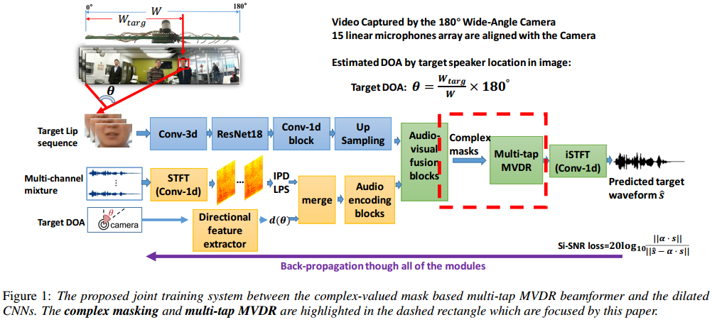
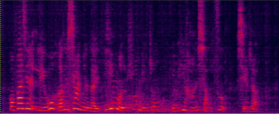

submitted to Interspeech2020, Yong XU (lucayongxu@tencent.com), Meng Yu, Shixiong Zhang, Lianwu Chen, Chao Weng, Jianming Liu, Dong Yu, Tencent AI lab, Bellevue, WA, USA

Demo 1 (aligned with the spectrograms shown in the paper, but listen to the wavs below):
| ReLU mask w/o MVDR (baseline) wav | Prop. Complex mask (CM) w/o MVDR wav | Complex mask MVDR Joint Train wav |
 

Prop. CM Multi-tap MVDR JT wav |
Reverb Clean (Reference clean) wav |
Mix (2-SPK overlapped + noise) wav |
Real-world recording Demo 1:

15-element non-uniform linear microphone array and colocated 180 degree wide-angle camera for our real-world video and audio recording
| Real world demo1: Real-world two-speaker mixture | Real world demo1: Real-world separated male speaker's speech (face detected and tracked in the red rectangle) |